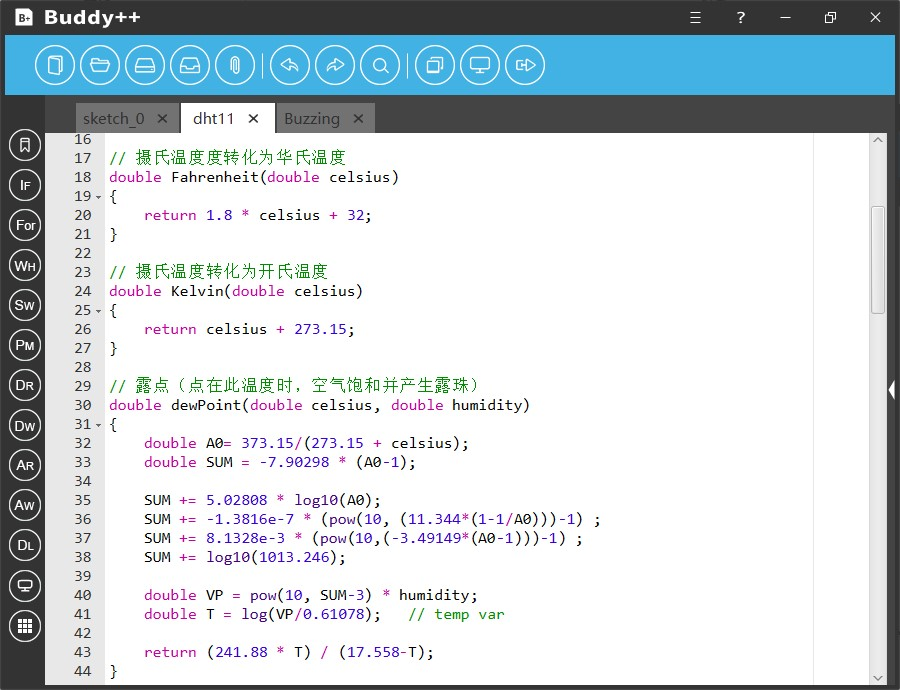
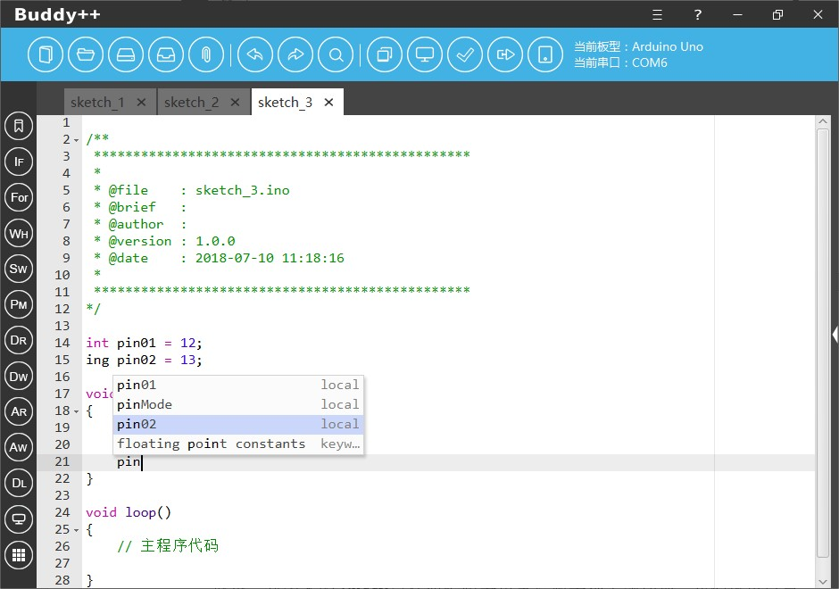
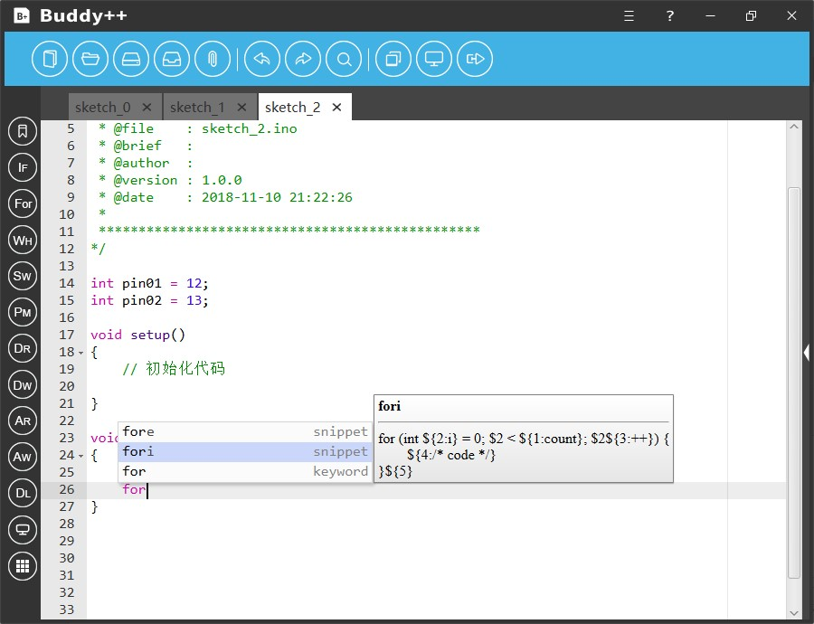
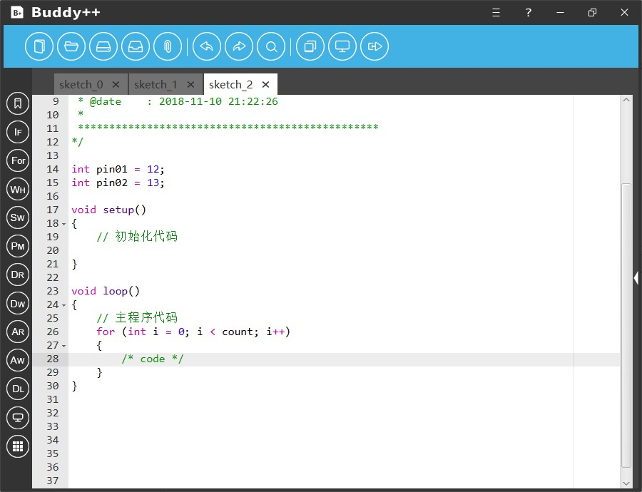
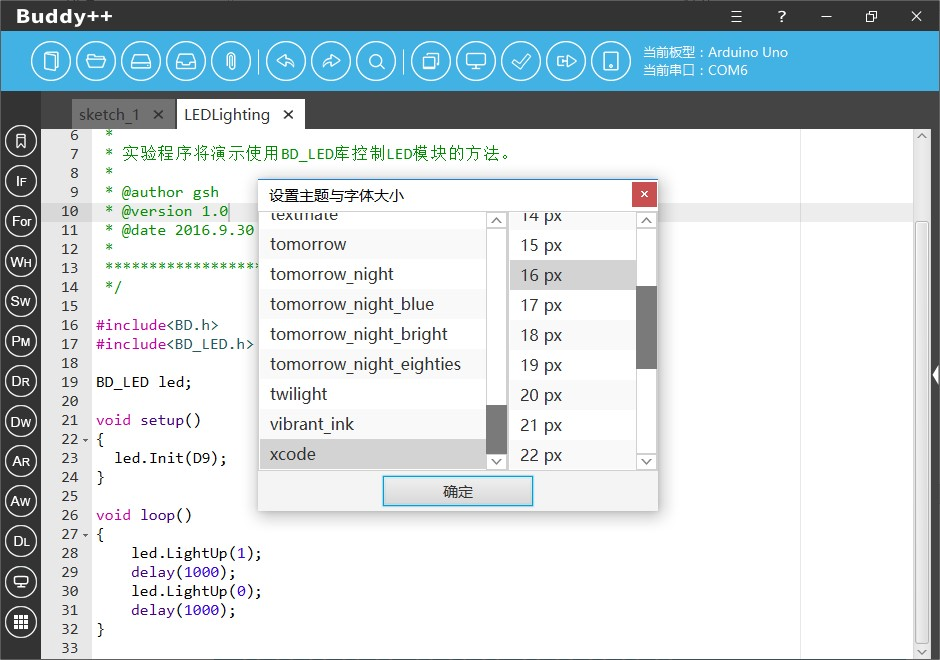
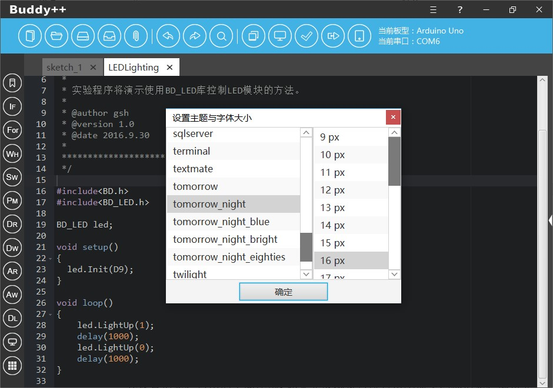
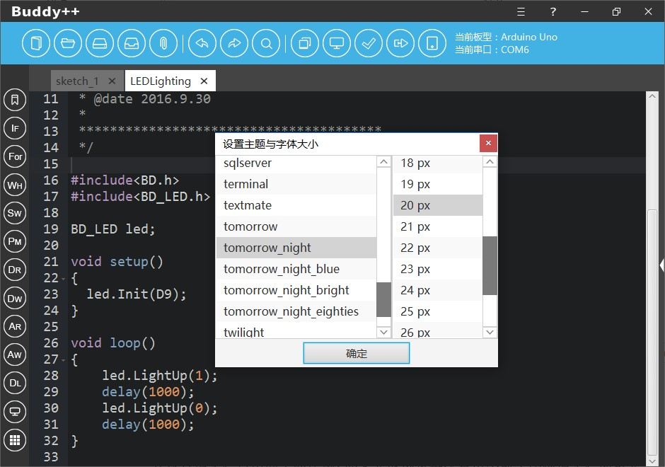

我们重新设计了代码编辑器，Buddy++实现了完美的中文支持及更优秀的语法高亮功能，编辑器支持包括关键词、运算符号、数据类型、函数名、注释等语法元素的高亮提醒，并且完美支持Arduino、C/C++等语言的语法，有完善的行数提示功能，代码块收缩功能，语法提示与补全功能等。

Buddy++在创建源码文件的时候会自动生成首页注释信息以方便开发者记录源码状况，信息包括有文件名称、简要概述、作者名称、版本号和当前源码生成的详细时间。
2.3.2 语句补全
新版本的Buddy++更换了全新的代码编辑器，新的编辑器支持基础的语句补全的功能，开发者可以借助语句补全功能更高效的开展工作。



此外，新版本的代码编辑器更支持数十种主题切换，Buddy++还可以让开发者自定义编辑器的字体与大小，以满足开发者对编辑器在视觉上的多元化需求。


